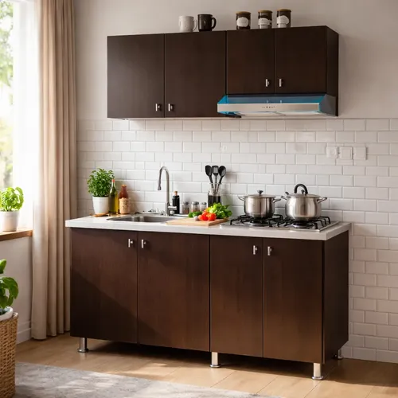

Olla de cocción lenta: Cómo tener la cena lista sin mover un dedo

Llegas de trabajar a las 7 de la noche, cansado, hambriento y lo último que quieres hacer es ponerte a picar cebolla y lavar sartenes. Terminas pidiendo pizza por tercera vez en la semana. Si esta historia te suena conocida, probablemente necesites conocer la magia (y las limitaciones) de la olla de cocción lenta o "Crock-Pot".
Pusimos a prueba un modelo estándar de olla de cocción lenta durante un mes para ver si realmente cumple la promesa de "tira los ingredientes y olvídalo" o si es otro aparato inútil que terminará acumulando polvo en un rincón. Aquí está la verdad cruda sobre la cocción lenta.
El concepto: ¿Cómo funciona?
Es el electrodoméstico más tonto (en el buen sentido) de la cocina moderna. Consiste simplemente en un tazón de cerámica pesada dentro de una carcasa de metal con una resistencia eléctrica de muy bajo voltaje. Su objetivo no es hervir el agua rápidamente, sino mantenerla justo por debajo del punto de ebullición durante períodos de 4 a 10 horas.
¿Qué hace esto con la comida? Magia pura con las carnes baratas. Los cortes duros y llenos de colágeno (como la espaldilla de cerdo o el pecho de res) necesitan cocciones muy largas para ablandarse. Después de 8 horas en esta olla, puedes desmenuzar la carne usando solo un tenedor.
¿Te interesa ahorrar tiempo? Revisa el precio de este modelo
Ver disponibilidad de la Olla LentaLa rutina ideal para los que trabajan
La mejor manera de usarla es preparar los ingredientes la noche anterior en un tupperware (picar verduras, aliñar carne). A las 7:00 a.m., antes de salir al trabajo, simplemente viertes todo el tupperware en la olla de cerámica, añades un poco de caldo o agua, la enciendes en temperatura baja ("Low") y te vas.
Al regresar a las 6:00 p.m., tu casa entera olerá a restaurante, la comida estará caliente y la carne perfectamente tierna. La olla de cerámica interna se saca y se lava fácilmente, e incluso suele ser apta para lavavajillas.
Lo malo: Todo sabe igual si no tienes cuidado
El mayor problema de la cocción lenta es que, debido al ambiente húmedo cerrado, los sabores tienden a mezclarse y volverse un tanto genéricos (lo que algunos llaman el "sabor a olla lenta"). Además, como no hay evaporación de líquidos, si pones demasiada agua terminarás con una sopa insípida en lugar de un guiso espeso.
Tampoco vas a conseguir el sabor de un buen sellado caramelizado. Muchos chefs recomiendan sellar la carne en un sartén normal antes de meterla a la olla lenta, pero siendo honestos, si lo compraste para no ensuciar nada por la mañana, este paso extra arruina un poco el propósito.
Conclusión
Si eres un chef purista que busca texturas crujientes y sabores perfectamente estratificados, este aparato no es para ti. Si en cambio eres un trabajador ocupado, padre o madre de familia que quiere tener una comida casera lista, caliente y económica (usando cortes de carne baratos que quedan suaves) sin esfuerzo real, es un salvavidas.
En nuestra opinión, la relación precio-utilidad es altísima. Es un aparato barato, casi imposible de romper, que te salvará de pedir comida a domicilio más de una vez a la semana.